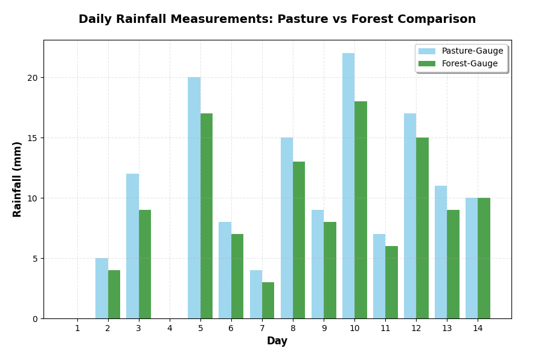

i. Atmospheric cooling to dew-point (by convective uplift in Darwin)
Lowers saturation vapour pressure; allows condensation to start.
ii. Abundant condensation nuclei (sea-salt, smoke from bushfires)
Provide surfaces for initial microscopic droplet formation; without them, air can remain supersaturated.
iii. Droplet growth to > \approx 3 mm (collision–coalescence in warm clouds)
Gives droplets sufficient mass to overcome up-draughts and fall as rain.
If any one is missing, vapour remains suspended, clouds persist without rainfall, or virga evaporates before reaching ground.
Singapore vs Scottish Highlands
Singapore ⇒ collision–coalescence in warm (> 0 °C) cumulonimbus; Highlands ⇒ Bergeron (ice-crystal) process in mixed-phase nimbostratus.
Singapore: whole cloud above freezing, strong up-draughts → droplets of different radii collide & merge. Highlands: vertical cross-section spans −5 °C to −15 °C; ice crystals grow at expense of super-cooled droplets because e_{s, \ ice} < e_{s, \ liq}; moderate lifting in frontal system.
Warm-cloud rain gives large, uniform raindrops, often > 2 mm, causing high-intensity bursts (> 100 \ mm \ h^{-1}). Bergeron process yields smaller frozen aggregates, which melt on descent → lower intensity but longer-lasting precipitation, with mixed graupel or wet snow.
Sierra Nevada
Orographic precipitation:
Max orographic band = 1 000–3 000 m on windward (western) flank.
Rain shadow = Owens Valley east of crest (< 300 mm yr⁻¹).
Dry-adiabatic: 9.8 \ °C \ km^{-1} up to LCL ( \approx 1200 \ m), then saturated rate 6 \degree \ C \ km^{-1} to 3000 m: \Delta T \approx −23 \ \degree C. Descent: warms at dry rate: +29 \degree C to valley floor.
Example towns: Bishop, Lone Pine. Both import water via Los Angeles Aqueduct; pumping from deep alluvial fans carefully managed because local recharge is minimal under rain-shadow conditions. See link.
Total rainfall: Forest = 140 mm; Pasture = 119 mm (\approx +15 \%).
Possible biases & fixes:
Bias / micro-site factor
Likely effect
Mitigation
Dense canopy causes interception loss before drops reach gauge orifice.
Under-catch at Forest site.
Install trough throughfall collectors + stemflow collars to quantify interception; or raise gauge above understory in a tower.
Wind-turbulence differences: clearing exposed → eddies may enhance Pasture catch.
Over-catch at Pasture.
Equip both gauges with Alter shields, measure local wind speed for correction factors.
Splash-in from drip points off overhanging leaves near Forest gauge.
Over-catch on intense days, but net effect variable.
Clear 1 m radius around gauge; fit non-splash grid.

Paired bar chart of rainfall at Forest and Pasture gauges.
A 5 Himalayan Catchment
Hypsometric method chosen:
Because gauges cluster low (< 1 800 m) yet \approx 40 \% of basin lies above snowline, rainfall–altitude gradient is strong & non-linear. Thiessen would over-weight lowlands; hypsometric belts (e.g., 500 m intervals) allocate snowfall intensities based on elevation and aspect → better represent orographic input and snow-water storage.
Supplement GPM (Global Precipitation Measurement) IMERG satellite or regional weather-radar composites. Calibrate bias using available gauges; blend with hypsometric zones through kriging or Bias-Corrected Precipitation Reconstruction (BCPR) to refine daily grids.